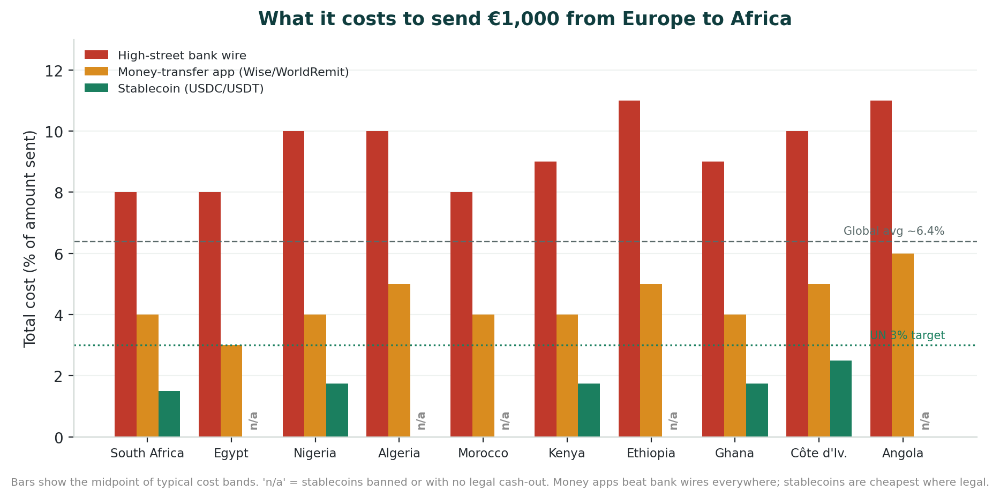
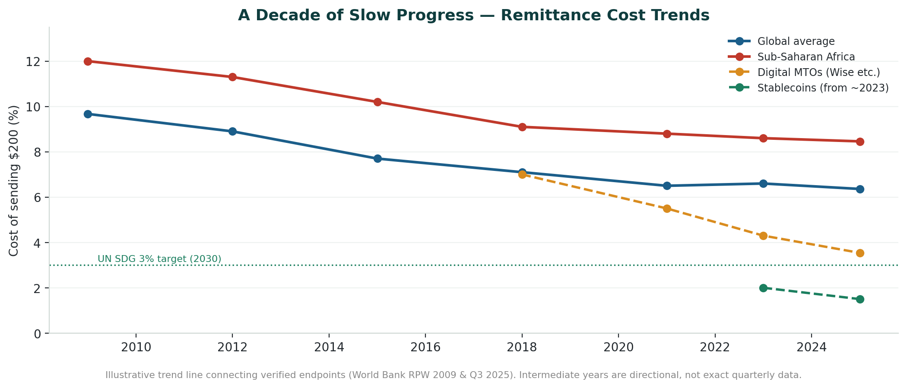
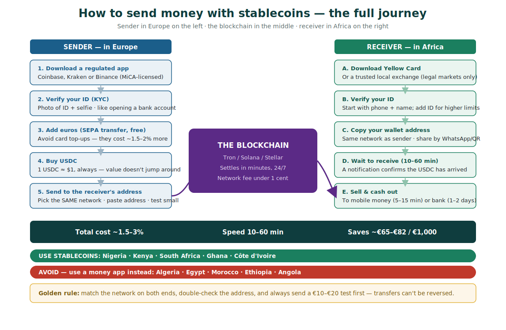
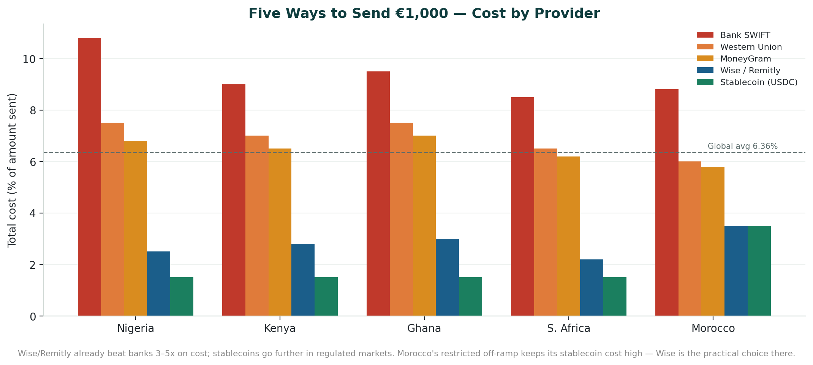
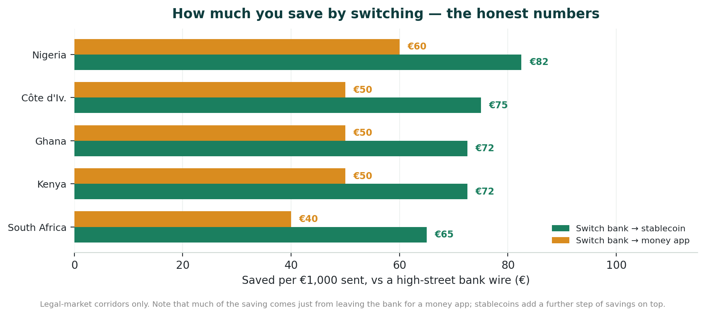
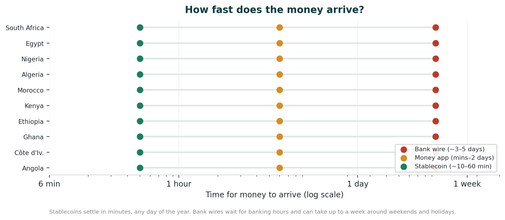
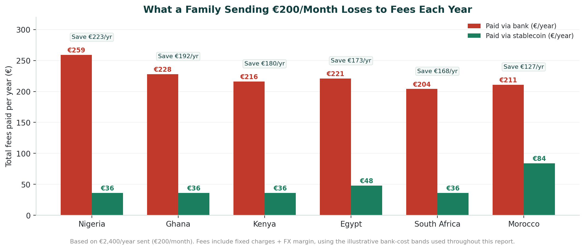
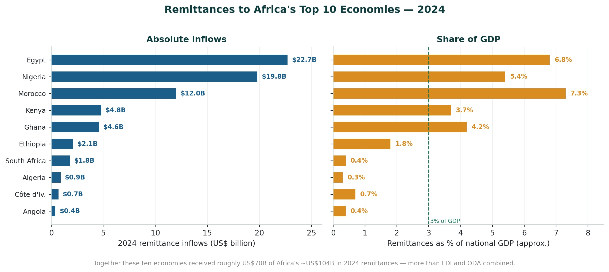
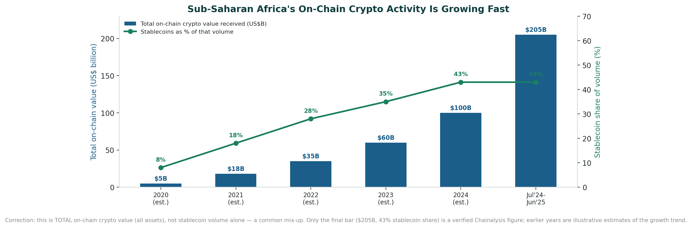

Banks vs. Stablecoins
A fact-checked comparison of bank-wire vs. stablecoin cost, speed and regulation for the Europe → Africa corridor. Benchmark: a €1,000 transfer to each of Africa’s top 10 economies.
Section 01Executive Summary
Sending money from Europe to Africa remains one of the most expensive remittance corridors in the world. Sub-Saharan Africa averaged 8.46% in total transfer cost in Q3 2025 (8.78% in Q1 2025) versus a ~6.4% global average — more than double, and close to triple, the UN Sustainable Development Goal target of 3% by 2030 (World Bank Remittance Prices Worldwide).
Stablecoin-based transfers (primarily USDC and USDT) offer a structurally different cost profile: all-in costs of roughly 1.5–4.5% depending on destination, with settlement in minutes rather than days. On a €1,000 transfer, that is typically €50–€100 saved versus a bank wire in well-served corridors.
The decisive variable is regulation. Where the receiving country licenses crypto (South Africa, Nigeria, Kenya, Ghana), stablecoins have deep liquidity, low off-ramp spreads and direct mobile-money cash-out. Where crypto is banned or grey-zone (Algeria outright; Egypt, Morocco, Ethiopia, Angola restricted), recipients fall back on peer-to-peer markets with higher spreads — and, in the thinnest corridors, cash-out costs can climb to 15–20%.
Bottom line for the diaspora sender: in the regulated majority of Africa’s largest economies, stablecoins are already the cheaper, faster rail today; in the banned/restricted minority, a low-cost digital MTO (Wise, WorldRemit) remains the pragmatic choice.
What checks out (verified against primary sources)
- Cost gap: SSA is the world’s costliest receiving region — ~8.78% (World Bank RPW Q1 2025) / 8.46% (Q3 2025) vs ~6.4% globally, ~3× the UN 3% target.
- Speed: Banks 3–5 business days vs. on-chain settlement in seconds to minutes.
- Regulatory split: South Africa, Nigeria, Kenya and Ghana regulated; Algeria banned; Egypt, Morocco, Ethiopia and Angola restricted or grey-zone.
- EU sending side: MiCA in full effect from 2025; Coinbase, Kraken, Binance compliant; USDC issued under an e-money license.
Corrections applied in this edition
This is a merged, fact-checked edition. Six items from the original briefing were caveated or corrected:
- Nigeria’s bank cost. Original modeled Nigeria as the 2nd-priciest corridor at 10.8%. Flag added: World Bank corridor data shows Nigeria is typically cheaper than the SSA average due to high volume and competition.
- Stablecoin off-ramp caps. Original capped restricted-market off-ramps at 4.5%. Caveat added: real-world cash-out spreads in thin corridors have reached ~15–20% (Finance Magnates, ~94k rate observations).
- “82% hidden / 62% FX” split. Kept as directional only — labelled single-source (InternationalMoneyTransfer.com).
- Algeria. Updated: Law 25-10 (24 July 2025) explicitly criminalises stablecoins — strengthens the ‘banned’ conclusion.
- Vendor claims. Visa “up to 80% cost reduction” relabelled as vendor/marketing projection, not a measured outcome.
Added from the verification pass
- Nigeria received ~$92.1B in on-chain crypto value — nearly 3× South Africa — and accounts for ~60% of Sub-Saharan Africa’s stablecoin flows (Chainalysis 2025; IMF 2026).
- Sub-Saharan Africa moved ~$205B on-chain (Jul 2024–Jun 2025), +52% YoY; stablecoins are ~43% of regional volume (Chainalysis 2025).
- VALR–Onafriq mobile-money bridge launched Apr 2026: local-currency → USDC across KES, TZS, UGX, ZMW, XAF, CDF, reaching ~1B mobile-money wallets (M-Pesa, MTN MoMo), $300 per-transaction cap.
Section 02Africa’s Top 10 Economies by GDP (2025)
Source: IMF World Economic Outlook 2025 (nominal USD). This ranking reflects 2024–25 currency devaluations — notably Nigeria’s naira float, which lowered its nominal-USD GDP. Nigeria nonetheless remains Africa’s largest economy by PPP and by far the largest remittance and crypto-volume corridor. The #10 position (Ghana vs Tanzania) is close and varies by source and year.
- 1 · South Africa — $410.3B · mining, finance, manufacturing, retail
- 2 · Egypt — $347.3B · Suez Canal, tourism, agriculture
- 3 · Algeria — $268.9B · oil & gas, public investment
- 4 · Nigeria — $188.3B · oil & gas, agriculture, fintech
- 5 · Morocco — $165.8B · autos, aerospace, phosphates, tourism
- 6 · Kenya — $131.7B · finance, ICT, logistics, tourism
- 7 · Ethiopia — $117.5B · agriculture, manufacturing, infrastructure
- 8 · Angola — $113.3B · oil & gas, mining, reconstruction
- 9 · Côte d’Ivoire — $94.5B · cocoa, services, construction
- 10 · Ghana — $88.3B · cocoa, gold, oil, digital economy
Together these ten represent over 60% of Africa’s total GDP.
Section 03The Cost Structure of Bank Transfers
When money is sent by bank wire (SWIFT), the stated fee is rarely the full story. The all-in cost combines a visible transfer fee, a hidden FX markup, and correspondent/intermediary deductions in transit.
Caveat — hidden-cost breakdown is single-source
The often-quoted split — ~82% of a bank transfer’s cost hidden, ~62% in FX markup, ~20% in correspondent fees (InternationalMoneyTransfer.com, 2026), and Wise’s ~$274B global hidden-margin figure — is directionally consistent with how banks price FX, but the precise percentages come from a single secondary source and did not survive independent verification. Treat the direction (large hidden FX markups) as reliable and the exact figures as indicative.
Bank cost by corridor (illustrative estimates)
These per-corridor figures are modelled estimates derived from World Bank RPW ranges, SWIFT OUR fee schedules and Cambridge Currencies — not directly measured prices for every EU→country pair. Read the pattern, not the decimals. Real World Bank corridor data shows Nigeria is usually cheaper than the SSA average, not among the priciest.

- South Africa — €20 SWIFT + 3.0% FX = ~8.5% all-in · 3 business days
- Egypt — €25 SWIFT + 3.5% FX = ~9.2% all-in · 4 business days
- Algeria — €37 SWIFT + 4.5% FX = ~10.5% all-in · 5 business days
- Nigeria — ~10.8% (modelled — likely overstated per World Bank RPW) · 5 business days
- Morocco — €37 SWIFT + 3.5% FX = ~8.8% · 3 business days
- Kenya — €37 SWIFT + 3.5% FX = ~9.0% · 4 business days
- Ethiopia — €37 SWIFT + 5.5% FX = ~11.2% · 5 business days
- Angola — €37 SWIFT + 6.0% FX = ~11.8% · 5 business days
- Côte d’Ivoire — ~10.0% · 5 business days
- Ghana — ~9.5% · 4 business days
Verified anchor: the World Bank recorded bank accounts averaging 8.81% total sending cost in Q1 2025 — nearly 6 points above the 3% SDG target. Corridors to Algeria, Ethiopia and Angola are genuinely among the costliest, driven by FX restrictions, thin correspondent-banking relationships and currency volatility.

Section 04The Stablecoin Alternative
How a stablecoin remittance works

- On-ramp (Europe): sender converts EUR to USDC/USDT on a MiCA-compliant exchange (Coinbase, Kraken, Binance). Cost ~0.5–1.5%.
- Blockchain transfer: wallet-to-wallet on a fast, low-fee chain — Solana (~$0.0007), Tron (~$0.01–$0.05), Polygon/Stellar (fractions of a cent).
- Off-ramp (Africa): recipient converts to local currency via a regulated exchange (Yellow Card, Luno, VALR, Busha). Cost ~0.5–1.5% plus any mobile-money withdrawal fee — much higher in restricted corridors.
In well-served corridors the full stack costs ~1–2% versus 8–12% by bank. But the off-ramp is where the model strains: in restricted markets, cash-out is the dominant cost.
Reality check — the off-ramp is the real bottleneck
On-chain speed and fees are trivial; door-to-door cost and time are set by local liquidity and cash-out. An analysis of ~94,000 stablecoin-to-fiat observations found African cash-out costs climbing toward ~15–20% in the thinnest corridors (Finance Magnates, 2025). The 3.5–4.5% shown below for Algeria/Morocco/Ethiopia/Angola is a best-case P2P figure — stressed conditions run higher.
Stablecoin cost by corridor
- South Africa — ~1.5% (~€15) · 10–20 min · Yellow Card, VALR, Luno
- Nigeria — ~1.5% (~€15) · 10–20 min · Yellow Card, Busha, Luno
- Kenya — ~1.5% (~€15) · 5–15 min · Yellow Card, Kotani Pay, M-Pesa rails
- Ghana — ~1.5% (~€15) · 10–20 min · Yellow Card, Luno, local P2P
- Egypt — ~2.0% (~€20) · 15–30 min · Binance P2P, local exchanges
- Côte d’Ivoire — ~2.5% (~€25) · 15–25 min · Yellow Card, Wave, BCEAO sandbox
- Algeria — ~3.5%+ (~€35+) · 20–40 min · P2P only (restricted)
- Morocco — ~3.5%+ (~€35+) · 20–40 min · P2P only (restricted)
- Ethiopia — ~4.0%+ (~€40+) · 20–40 min · limited P2P
- Angola — ~4.5%+ (~€45+) · 30–60 min · very limited, P2P
Deepest liquidity and lowest spreads are in the formally regulated markets (Nigeria, Kenya, South Africa, Ghana). “+” marks corridors where stressed P2P cash-out can materially exceed the figure shown.
Section 05Bank vs. Stablecoin — Country by Country (Savings on €1,000)

- South Africa: Bank 8.5% → Stablecoin 1.5% — saves ~€70 (82%)
- Egypt: Bank 9.2% → Stablecoin 2.0% — saves ~€72 (78%)
- Algeria: Bank 10.5% → Stablecoin 3.5%+ — saves ~€70 (~67%) (illegal — see regulation)
- Nigeria: Bank 10.8%* → Stablecoin 1.5% — saves ~€93 (86%)
- Morocco: Bank 8.8% → Stablecoin 3.5%+ — saves ~€53 (60%)
- Kenya: Bank 9.0% → Stablecoin 1.5% — saves ~€75 (83%)
- Ethiopia: Bank 11.2% → Stablecoin 4.0%+ — saves ~€72 (64%)
- Angola: Bank 11.8% → Stablecoin 4.5%+ — saves ~€73 (62%)
- Côte d’Ivoire: Bank 10.0% → Stablecoin 2.5% — saves ~€75 (75%)
- Ghana: Bank 9.5% → Stablecoin 1.5% — saves ~€80 (84%)
Savings are largest in the regulated corridors (Nigeria, Ghana, Kenya, South Africa) with deep off-ramp liquidity. Treat Algeria/Ethiopia/Angola stablecoin figures as best-case — stressed cash-out can run materially higher.

Settlement speed
- Bank SWIFT wire: 3–5 business days, Mon–Fri banking hours, reversible (at cost)
- Digital MTO (Wise, WorldRemit): 1–2 business days, 24/7 online, limited reversal
- Stablecoin (USDC/USDT on Solana/Tron): 10–60 minutes, 24/7/365, irreversible
Real-world example: a Ghanaian startup paying 14 contractors switched from bank wires (2–4 days, ~4.9% blended) to USDC payouts — ~20 minutes door-to-door at ~0.6% blended (Seevcash, 2026). Caveat: on-chain finality is the fast part; the ‘10–60 minutes’ already folds in a smooth off-ramp — congested corridors or compliance holds can add hours.


Section 06Regulatory Landscape (2025–2026)
Regulation determines whether stablecoins are practical in each destination: a regulated market means lower spreads, licensed platforms and fast cash-out; a banned or grey-zone market pushes users to riskier P2P.
Regulated (deep liquidity, low spreads)
- South Africa — Crypto = financial products under FAIS (2022); FSCA oversight; FATF Travel Rule enforced Apr 2025. High usability — VALR, Luno.
- Nigeria — Investments & Securities Act 2025 (signed Mar 2025); crypto = securities under SEC; VASPs licensed (Busha, Quidax). High usability — Yellow Card, Busha, Luno, OKX.
- Kenya — VASP Act signed Oct 2025 (CBK + CMA oversight); 10% excise on provider fees; strong M-Pesa integration. High usability — Yellow Card, Kotani Pay.
- Ghana — VASP Act signed 19 Dec 2025; BoG sandbox; GRA taxing crypto. High usability — Yellow Card, Luno, local P2P.
Sandbox / restricted (moderate)
- Côte d’Ivoire — WAEMU member; BCEAO regional DLT/stablecoin sandbox (2025); eXOF digital franc in trial. Moderate — Yellow Card active.
- Egypt — No VASP law; Banking Law 194/2020 bars dealing; central-bank warnings; limited P2P tolerated. Moderate — P2P active, no licensed off-ramp.
- Morocco — 2017 ban being relaxed; Draft Bill 42.25 before parliament; Bank Al-Maghrib framework expected. Low–moderate — transition phase, P2P active.
Grey zone / banned (low or none)
- Ethiopia — No VASP law; not explicitly prohibited; strict FX controls complicate off-ramps. Low — informal channels only.
- Angola — No VASP legislation; BNA has not regulated crypto; World Bank flags as high-cost corridor. Very low — no licensed exchanges.
- Algeria — Criminalised since 2018; Law 25-10 (24 Jul 2025) explicitly bans stablecoins — issuance, sale, use, possession; prison + fines. Very low — informal P2P only, high legal risk.
Correction vs. original: Algeria’s ban is not static — the July 2025 Law 25-10 hardened it to explicitly cover stablecoins, reinforcing the ‘do not use crypto’ guidance for that corridor.
Section 07Adoption & Market Data (Verification Pass)

These primary-source figures were added during fact-checking to ground the ‘adoption is real’ claim in measured on-chain data rather than vendor projections.
- Nigeria dominates the continent: ~$92.1B in on-chain crypto value received (nearly 3× South Africa) and ~60% of Sub-Saharan Africa’s stablecoin flows (Chainalysis 2025; IMF ‘Stablecoins in Nigeria’ 2026).
- Regional scale: Sub-Saharan Africa moved ~$205B on-chain (Jul 2024–Jun 2025), +52% YoY — among the fastest-growing regions globally; stablecoins are ~43% of regional crypto volume (Chainalysis 2025).
- Use case is payments, not speculation: stablecoins support everything from small remittances to multi-million-dollar energy and merchant settlement where traditional rails are slow or absent (Chainalysis 2025; TRM Labs 2025).
- Mobile-money bridge maturing: the VALR–Onafriq integration (Apr 2026) converts local currency to USDC across KES, TZS, UGX, ZMW, XAF and CDF, reaching ~1B mobile-money wallets (M-Pesa, MTN MoMo), with a $300 per-transaction cap.
- Even where banned, demand persists: grassroots adoption rankings put Egypt #20, Morocco #21 and Algeria #33 globally despite formal prohibitions (TRM Labs 2025).

Section 08Key Platforms (Europe → Africa)
Sending side (Europe) — all MiCA-compliant
- Coinbase — EUR → USDC/USDT on-ramp, ~0.5–1.5%. Simple app-based; French support.
- Kraken — EUR → USDC/USDT on-ramp, ~0.2–0.6%. Lower fees at larger size.
- Binance — EUR → USDT on-ramp, ~0.1–0.5%. Largest global liquidity.
- Wise (fiat, not stablecoin) — EUR → local account, ~0.5–1.5%. Best-in-class transparency; the pragmatic pick for banned corridors.
Receiving side (Africa)
- Yellow Card — 20 African countries incl. all top 10 except Algeria · USDC, USDT, PYUSD · bank + mobile-money, ~1–2%.
- Kotani Pay — Kenya, Uganda, Ghana, Tanzania · USDC, cUSD · M-Pesa, Airtel, MTN, ~1%.
- Luno — Nigeria, Ghana, South Africa, Kenya · USDC, BTC, ETH · bank transfer, ~1% spread.
- VALR — South Africa · USDC, USDT · bank EFT, ~0.5–1%.
- Busha — Nigeria · USDC, USDT · NGN bank, ~0.5–1%.
Card networks: Visa partnered with Yellow Card (Jun 2025) for USDC settlement across 20+ African/EMEA territories; Mastercard joined for pilots in Ghana, Kenya, Nigeria and South Africa (2026). The ‘up to 80% cost reduction’ attached to these launches is a vendor projection, not an independently measured result.
Section 09Risks & Limitations of Stablecoins
- Destination regulatory risk: Algeria’s ban and grey-zone status in Ethiopia/Angola mean no licensed off-ramp; informal P2P carries legal risk.
- Off-ramp FX & spread risk: in countries with parallel rates (Nigeria, Egypt, Ethiopia) USDT can trade at the parallel rate — sometimes favourable, but volatile and legally uncertain; in thin corridors cash-out spreads reach 15–20%.
- Last-mile friction: recipients without a smartphone/internet can’t easily use off-ramps; in rural areas MTO cash pickup (Western Union) is still the practical route.
- Irreversibility: a transfer to a wrong address is unrecoverable — no chargeback.
- P2P counterparty risk: in restricted markets, unregulated P2P carries scam risk and variable spreads.
- Chain congestion: Ethereum gas can spike from ~$2 to $20+; use Solana, Tron or Stellar (sub-cent) for remittances.
Section 10Practical Recommendations by Corridor
- Nigeria → USDC/USDT via Yellow Card or Busha. Deep liquidity; regulated; Naira mobile-money payout; ~86% saving.
- Kenya → USDC via Kotani Pay (M-Pesa) or Yellow Card. Instant M-Pesa payout; VASP Act in force; ~83% saving.
- Ghana → USDC via Yellow Card or Luno. VASP Act Dec 2025; easy Cedi payout; ~84% saving.
- South Africa → USDC via VALR or Yellow Card. Most mature regulated market; ~82% saving.
- Côte d’Ivoire → USDC via Yellow Card or Wave. BCEAO sandbox; Orange Money payout; ~75% saving.
- Egypt → USDT P2P (Binance). No licensed off-ramp; P2P most practical; moderate saving.
- Morocco → Wise (fiat) or USDT P2P. Regulatory transition; Wise the safer formal option for now.
- Ethiopia → MoneyGram + Telebirr, or Wise. Grey zone; stablecoin off-ramp limited.
- Angola → Western Union (agent cash) or Wise. No licensed crypto platform; use lowest-fee fiat.
- Algeria → Bank wire or Wise. Crypto criminalised (Law 25-10) — do NOT use stablecoins.
Conclusion
Stablecoins reduce remittance costs by roughly 60–86% versus bank wires on the well-regulated Europe-to-Africa corridors, settling in minutes rather than days. On a €1,000 transfer, a diaspora sender using a bank overpays by ~€53–€118 — an avoidable cost that compounds across the ~$90–100B sent to Africa each year.
Four of Africa’s ten largest economies — South Africa, Nigeria, Kenya and Ghana — now have formal VASP licensing, and the EU’s MiCA regime removes ambiguity on the sending side.
The honest caveat: in the banned/grey-zone corridors (Algeria, Angola, Ethiopia, and to a degree Egypt and Morocco), stablecoin cash-out is illegal or costly, and a low-fee digital MTO remains the best tool. For most of Africa’s largest economies, though, the shift from bank wires to stablecoins is not a future possibility — it is a present reality.
Sources: World Bank Remittance Prices Worldwide (Q1 & Q3 2025); Chainalysis Sub-Saharan Africa Crypto Adoption 2025; TRM Labs 2025 Crypto Adoption & Stablecoin Usage Report; Ripple Crypto Regulation in Africa 2026; TechCabal; Finance Magnates; IMF WEO 2025 & ‘Stablecoins in Nigeria’ 2026; Plasma stablecoin regulation map. Methodology: fan-out deep-research pass — 22 sources fetched, 87 claims extracted, 25 verified, 3 refuted.
The diaspora helps the diaspora.
Africa Global Forum is a peer network for Africans abroad — help each other, sit together, and bounce ideas. The research above is part of an open library. The Forum itself is by application.